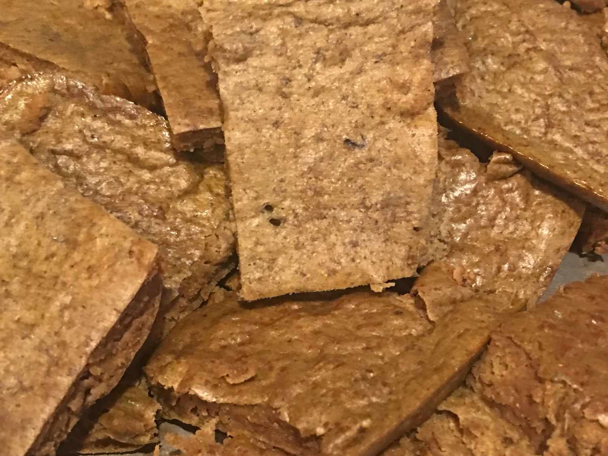

Dr. Doggo's Diabetic Dog Treats
These diabetic dog treats are easy to make with beef liver.
If you have a diabetic dog like we do, you'll know it is hard to find a treat that will do no harm; this is one of those treats — even dogs without diabetes will enjoy them!
Ingredients
- 1 1/2lbs beef liver, cut into pieces
- 1/2 cup whole wheat flour
- 2 eggs
- parchment paper
Steps
- Preheat the oven to 350 degrees F (175 degrees C). Line a 10x15-inch jellyroll pan with parchment paper.
- Place liver into a food processor; pulse until finely chopped. If you have room, add flour and eggs, and process until smooth. Otherwise, transfer to a bowl, and stir in flour and eggs using a wooden spoon. Spread evenly in the prepared pan.
- Bake in the preheated oven until center is firm, about 15 minutes. Cool in the pan, then cut into squares using a pizza cutter. The treats will have a consistency similar to a sponge. Store in a sealed container in the refrigerator.